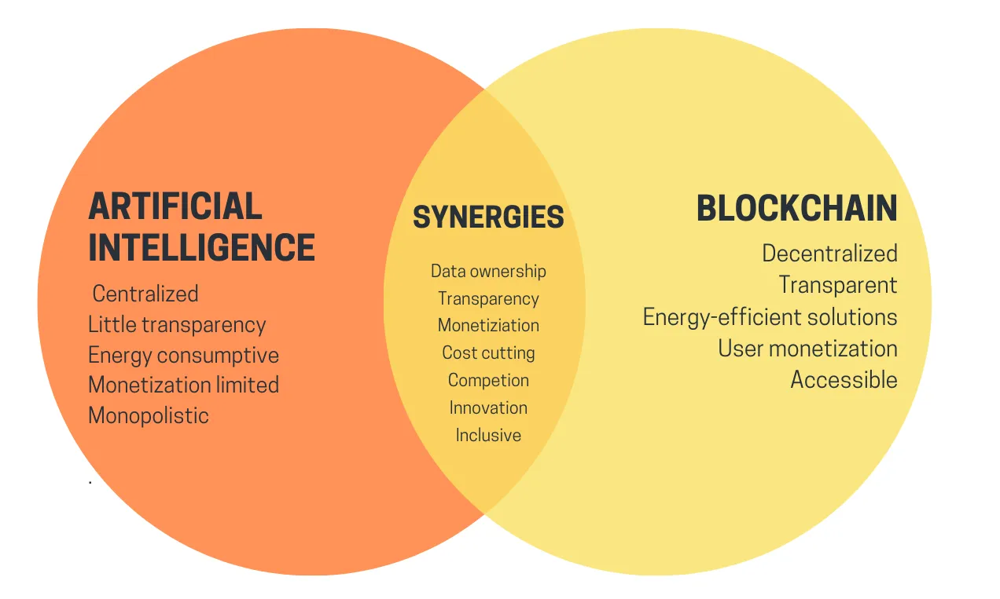
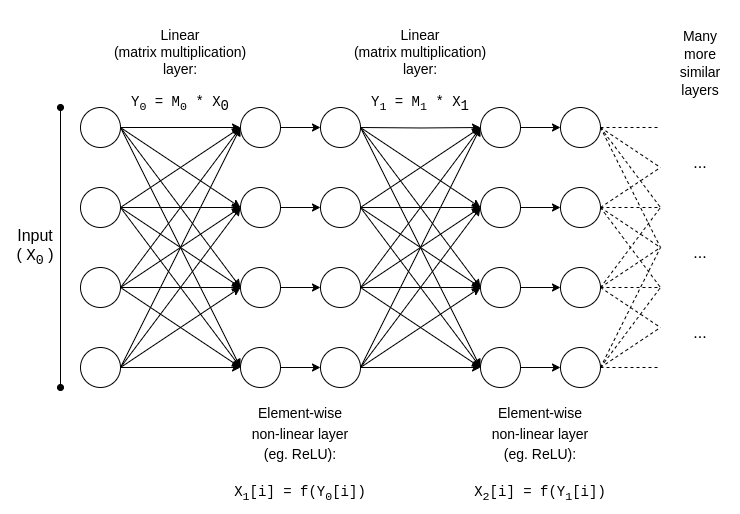
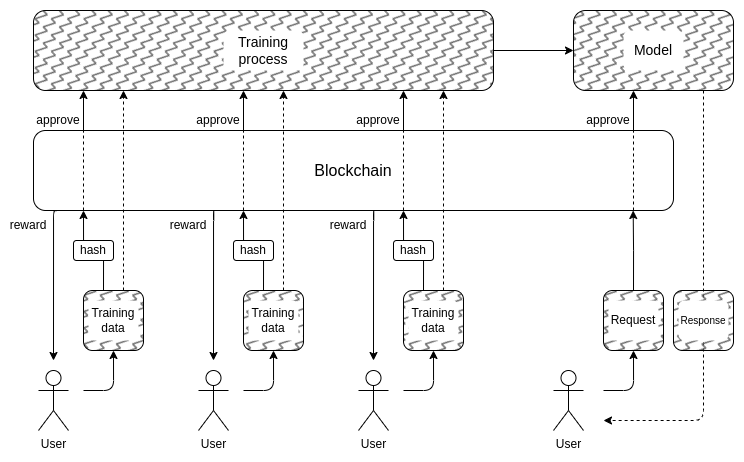
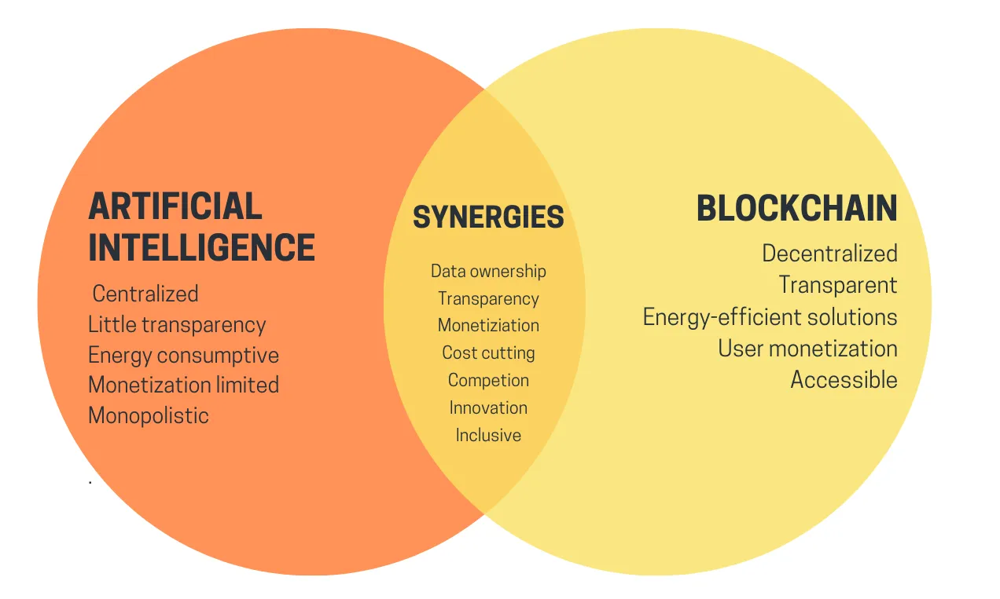
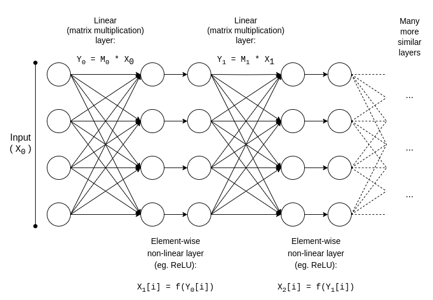
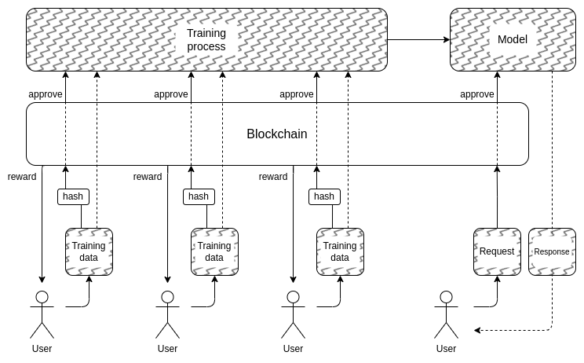

The promise and challenges of crypto + AI applications
2024 Jan 30
See all posts
The promise and challenges of crypto + AI applications
Special thanks to the Worldcoin and Modulus Labs teams, Xinyuan
Sun, Martin Koeppelmann and Illia Polosukhin for feedback and
discussion.
Many people over the years have asked me a similar question: what are
the intersections between crypto and AI that I consider to be
the most fruitful? It's a reasonable question: crypto and AI are the two
main deep (software) technology trends of the past decade, and it just
feels like there must be some kind of connection between the
two. It's easy to come up with synergies at a superficial vibe level:
crypto decentralization can balance
out AI centralization, AI is opaque and crypto brings transparency,
AI needs data and blockchains are good for storing and tracking data.
But over the years, when people would ask me to dig a level deeper and
talk about specific applications, my response has been a disappointing
one: "yeah there's a few things but not that much".
In the last three years, with the rise of much more powerful AI in
the form of modern LLMs, and
the rise of much more powerful crypto in the form of not just blockchain
scaling solutions but also ZKPs, FHE, (two-party and
N-party) MPC,
I am starting to see this change. There are indeed some promising
applications of AI inside of blockchain ecosystems, or AI
together with cryptography, though it is important to be careful
about how the AI is applied. A particular challenge is: in cryptography,
open source is the only way to make something truly secure, but in AI, a
model (or even its training data) being open greatly increases
its vulnerability to adversarial
machine learning attacks. This post will go through a classification
of different ways that crypto + AI could intersect, and the prospects
and challenges of each category.

A high-level summary of crypto+AI intersections from a uETH
blog post. But what does it take to actually realize any of these
synergies in a concrete application?
The four major categories
AI is a very broad concept: you can think of "AI" as being the set of
algorithms that you create not by specifying them explicitly, but rather
by stirring a big computational soup and putting in some kind of
optimization pressure that nudges the soup toward producing algorithms
with the properties that you want. This description should definitely
not be taken dismissively: it includes the process that
created
us humans in the first place! But it does mean that AI algorithms have
some common properties: their ability to do things that are extremely
powerful, together with limits in our ability to know or understand
what's going on under the hood.
There are many ways to categorize AI; for the purposes of this post,
which talks about interactions between AI and blockchains (which have
been described as a platform for creating
"games"), I will categorize it as follows:
- AI as a player in a game [highest viability]: AIs
participating in mechanisms where the ultimate source of the incentives
comes from a protocol with human inputs.
- AI as an interface to the game [high potential, but with
risks]: AIs helping users to understand the crypto world around
them, and to ensure that their behavior (ie. signed messages and
transactions) matches their intentions and they do not get tricked or
scammed.
- AI as the rules of the game [tread very carefully]:
blockchains, DAOs and similar mechanisms directly calling into AIs.
Think eg. "AI judges"
- AI as the objective of the game [longer-term but
intriguing]: designing blockchains, DAOs and similar mechanisms
with the goal of constructing and maintaining an AI that could be used
for other purposes, using the crypto bits either to better incentivize
training or to prevent the AI from leaking private data or being
misused.
Let us go through these one by one.
AI as a player in a game
This is actually a category that has existed for nearly a decade, at
least since on-chain
decentralized exchanges (DEXes) started to see significant use. Any
time there is an exchange, there is an opportunity to make money through
arbitrage, and bots can do arbitrage much better than humans can. This
use case has existed for a long time, even with much simpler AIs than
what we have today, but ultimately it is a very real AI + crypto
intersection. More recently, we have seen MEV arbitrage bots often
exploiting each other. Any time you have a blockchain application
that involves auctions or trading, you are going to have arbitrage
bots.
But AI arbitrage bots are only the first example of a much bigger
category, which I expect will soon start to include many other
applications. Meet AIOmen, a demo of
a prediction market where AIs are players:
Prediction markets have been a holy grail of epistemics technology
for a long time; I was excited about using prediction markets as an
input for governance ("futarchy") back
in 2014, and played
around with them extensively in the last election as well as more recently.
But so far prediction markets have not taken off too much in
practice, and there is a series of commonly given reasons why: the
largest participants are often irrational, people with the right
knowledge are not willing to take the time and bet unless a lot
of money is involved, markets are often thin, etc.
One response to this is to point to ongoing UX improvements in Polymarket or other new prediction
markets, and hope that they will succeed where previous iterations have
failed. After all, the story goes, people are willing to bet tens
of billions on sports, so why wouldn't people throw in enough money
betting on US elections or LK99 that it starts to
make sense for the serious players to start coming in? But this argument
must contend with the fact that, well, previous iterations have
failed to get to this level of scale (at least compared to their
proponents' dreams), and so it seems like you need something
new to make prediction markets succeed. And so a different response
is to point to one specific feature of prediction market ecosystems that
we can expect to see in the 2020s that we did not see in the 2010s:
the possibility of ubiquitous participation by AIs.
AIs are willing to work for less than $1 per hour, and have the
knowledge of an encyclopedia - and if that's not enough, they can even
be integrated with real-time web search capability. If you make a
market, and put up a liquidity subsidy of $50, humans will not care
enough to bid, but thousands of AIs will easily swarm all over the
question and make the best guess they can. The incentive to do a good
job on any one question may be tiny, but the incentive to make an AI
that makes good predictions in general may be in the millions.
Note that potentially, you don't even need the humans to
adjudicate most questions: you can use a multi-round dispute
system similar to Augur
or Kleros, where AIs would also be the ones participating in earlier
rounds. Humans would only need to respond in those few cases where a
series of escalations have taken place and large amounts of money have
been committed by both sides.
This is a powerful primitive, because once a "prediction market" can
be made to work on such a microscopic scale, you can reuse the
"prediction market" primitive for many other kinds of questions:
- Is this social media post acceptable under [terms of
use]?
- What will happen to the price of stock X (eg. see Numerai)
- Is this account that is currently messaging me actually Elon
Musk?
- Is this work submission on an online task marketplace
acceptable?
- Is the dapp at https://examplefinance.network a
scam?
- Is
0x1b54....98c3 actually the address of the
"Casinu Inu" ERC20 token?
You may notice that a lot of these ideas go in the direction of what
I called "info
defense" in my writings on "d/acc". Broadly defined, the question
is: how do we help users tell apart true and false information and
detect scams, without empowering a centralized authority to decide right
and wrong who might then abuse that position? At a micro level, the
answer can be "AI". But at a macro level, the question is: who builds
the AI? AI is a reflection of the process that created it, and so cannot
avoid having biases. Hence, there is a need for a higher-level
game which adjudicates how well the different AIs are doing, where AIs
can participate as players in the game.
This usage of AI, where AIs participate in a mechanism where they get
ultimately rewarded or penalized (probabilistically) by an on-chain
mechanism that gathers inputs from humans (call it decentralized
market-based RLHF?),
is something that I think is really worth looking into. Now is the right
time to look into use cases like this more, because blockchain scaling
is finally succeeding, making "micro-" anything finally viable on-chain
when it was often not before.
A related category of applications goes in the direction of highly
autonomous agents using
blockchains to better cooperate, whether through payments or through
using smart contracts to make credible commitments.
AI as an interface to the
game
One idea that I brought up in my writings on
is the idea that there is a market opportunity to write
user-facing software that would protect users' interests by interpreting
and identifying dangers in the online world that the user is navigating.
One already-existing example of this is Metamask's scam detection
feature:

Another example is the Rabby wallet's
simulation feature, which shows the user the expected consequences of
the transaction that they about to sign.
Rabby explaining to me the consequences of signing a transaction
to trade all of my "BITCOIN" (the ticker of an ERC20 memecoin whose full
name is apparently "HarryPotterObamaSonic10Inu") for
ETH.
Edit 2024.02.02: an earlier version of this post referred to this
token as a scam trying to impersonate bitcoin. It is not; it is a
memecoin. Apologies for the confusion.
Potentially, these kinds of tools could be super-charged with AI. AI
could give a much richer human-friendly explanation of what kind of dapp
you are participating in, the consequences of more complicated
operations that you are signing, whether or not a particular token is
genuine (eg. BITCOIN is not just a string of characters,
it's normally the name of a major cryptocurrency, which is not an ERC20
token and which has a price waaaay higher than $0.045, and a modern LLM
would know that), and so on. There are projects starting to go all the
way out in this direction (eg. the LangChain
wallet, which uses AI as a primary interface). My own
opinion is that pure AI interfaces are probably too risky at the moment
as it increases the risk of other
kinds of errors, but AI complementing a more conventional interface
is getting very viable.
There is one particular risk worth mentioning. I will get into this
more in the section on "AI as rules of the game" below, but the
general issue is adversarial machine learning: if a user has access to
an AI assistant inside an open-source wallet, the bad guys will have
access to that AI assistant too, and so they will have unlimited
opportunity to optimize their scams to not trigger that wallet's
defenses. All modern AIs have bugs somewhere, and it's not too
hard for a training process, even one with only limited
access to the model, to find them.
This is where "AIs participating in on-chain micro-markets" works
better: each individual AI is vulnerable to the same risks, but you're
intentionally creating an open ecosystem of dozens of people constantly
iterating and improving them on an ongoing basis. Furthermore, each
individual AI is closed: the security of the system comes from the
openness of the rules of the game, not the internal workings of
each player.
Summary: AI can help users understand what's going on in
plain language, it can serve as a real-time tutor, it can protect users
from mistakes, but be warned when trying to use it directly against
malicious misinformers and scammers.
AI as the rules of the game
Now, we get to the application that a lot of people are excited
about, but that I think is the most risky, and where we need to tread
the most carefully: what I call AIs being part of the rules of the game.
This ties into excitement among mainstream political elites about "AI
judges" (eg. see this
article on the website of the "World Government Summit"), and there
are analogs of these desires in blockchain applications. If a
blockchain-based smart contract or a DAO needs to make a subjective
decision (eg. is a particular work product acceptable in a work-for-hire
contract? Which is the right interpretation of a natural-language
constitution like the Optimism Law
of Chains?), could you make an AI simply be part of the contract or
DAO to help enforce these rules?
This is where adversarial
machine learning is going to be an extremely tough challenge. The
basic two-sentence argument why is as follows:
If an AI model that plays a key role in a mechanism is
closed, you can't verify its inner workings, and so it's no better than
a centralized application. If the AI model is open, then an attacker can
download and simulate it locally, and design heavily optimized attacks
to trick the model, which they can then replay on the live
network.

Adversarial machine learning example. Source: researchgate.net
Now, frequent readers of this blog (or denizens of the cryptoverse)
might be getting ahead of me already, and thinking: but wait! We have
fancy zero knowledge proofs and other really cool forms of cryptography.
Surely we can do some crypto-magic, and hide the inner workings of the
model so that attackers can't optimize attacks, but at the same time prove that the model is being
executed correctly, and was constructed using a reasonable training
process on a reasonable set of underlying data!
Normally, this is exactly the type of thinking that I
advocate both on this blog and in my other writings. But in the case of
AI-related computation, there are two major objections:
- Cryptographic overhead: it's much less efficient to
do something inside a SNARK (or MPC or...) than it is to do it "in the
clear". Given that AI is very computationally-intensive already, is
doing AI inside of cryptographic black boxes even computationally
viable?
- Black-box adversarial machine learning attacks:
there are ways to optimize attacks against AI models even
without knowing much about the model's internal workings. And if you
hide too much, you risk making it too easy for whoever chooses
the training data to corrupt the model with poisoning attacks.
Both of these are complicated rabbit holes, so let us get into each
of them in turn.
Cryptographic overhead
Cryptographic gadgets, especially general-purpose ones like ZK-SNARKs
and MPC, have a high overhead. An Ethereum block takes a few hundred
milliseconds for a client to verify directly, but generating a ZK-SNARK
to prove the correctness of such a block can take hours. The typical
overhead of other cryptographic gadgets, like MPC, can be even worse. AI
computation is expensive already: the most powerful LLMs can output
individual words only a little bit faster than human beings can read
them, not to mention the often multimillion-dollar computational costs
of training the models. The difference in quality between
top-tier models and the models that try to economize much more on training
cost or parameter
count is large. At first glance, this is a very good reason to be
suspicious of the whole project of trying to add guarantees to AI by
wrapping it in cryptography.
Fortunately, though, AI is a very specific type of
computation, which makes it amenable to all kinds of
optimizations that more "unstructured" types of computation
like ZK-EVMs cannot benefit from. Let us examine the basic structure of
an AI model:

Usually, an AI model mostly consists of a series of matrix
multiplications interspersed with per-element non-linear operations such
as the ReLU
function (y = max(x, 0)). Asymptotically, matrix
multiplications take up most of the work: multiplying two
N*N matrices takes \(O(N^{2.8})\) time, whereas the number
of non-linear operations is much smaller. This is really
convenient for cryptography, because many forms of cryptography can do
linear operations (which matrix multiplications are, at least if you
encrypt the model but not the inputs to it) almost "for
free".
If you are a cryptographer, you've probably already heard of a
similar phenomenon in the context of homomorphic encryption:
performing additions on encrypted ciphertexts is really easy,
but multiplications are incredibly hard and we did not figure
out any way of doing it at all with unlimited depth until 2009.
For ZK-SNARKs, the equivalent is protocols like this one from
2013, which show a less than 4x overhead on proving matrix
multiplications. Unfortunately, the overhead on the non-linear layers
still ends up being significant, and the best implementations in
practice show overhead of around 200x. But there is hope that this can
be greatly decreased through further research; see this presentation
from Ryan Cao for a recent approach based on GKR, and my own simplified
explanation of how the main component of GKR works.
But for many applications, we don't just want to prove that
an AI output was computed correctly, we also want to hide the
model. There are naive approaches to this: you can split up the
model so that a different set of servers redundantly store each layer,
and hope that some of the servers leaking some of the layers doesn't
leak too much data. But there are also surprisingly effective forms of
specialized multi-party
computation.

A simplified diagram of one of these approaches, keeping the
model private but making the inputs public. If we want to keep the model
and the inputs private, we can, though it gets a bit more
complicated: see pages 8-9 of the paper.
In both cases, the moral of the story is the same: the
greatest part of an AI computation is matrix multiplications, for which
it is possible to make very efficient ZK-SNARKs or MPCs (or
even FHE), and so the total overhead of putting AI inside cryptographic
boxes is surprisingly low. Generally, it's the non-linear
layers that are the greatest bottleneck despite their smaller size;
perhaps newer techniques like lookup
arguments can help.
Black-box adversarial
machine learning
Now, let us get to the other big problem: the kinds of attacks that
you can do even if the contents of the model are kept private
and you only have "API access" to the model. Quoting a paper from 2016:
Many machine learning models are vulnerable to adversarial examples:
inputs that are specially crafted to cause a machine learning model to
produce an incorrect output. Adversarial examples that affect
one model often affect another model, even if the two models have
different architectures or were trained on different training sets, so
long as both models were trained to perform the same task. An
attacker may therefore train their own substitute model, craft
adversarial examples against the substitute, and transfer them to a
victim model, with very little information about the victim.

Use black-box access to a "target classifier" to train and refine
your own locally stored "inferred classifier". Then, locally generate
optimized attacks against the inferred classifier. It turns out these
attacks will often also work against the original target classifier. Diagram source.
Potentially, you can even create attacks knowing just the
training data, even if you have very limited or no access to the
model that you are trying to attack. As of 2023, these kinds of attacks
continue to be a large problem.
To effectively curtail these kinds of black-box attacks, we need to
do two things:
- Really limit who or what can query the
model and how much. Black boxes with unrestricted API access
are not secure; black boxes with very restricted API access may be.
- Hide the training data, while preserving confidence
that the process used to create the training data is not corrupted.
The project that has done the most on the former is perhaps
Worldcoin, of which I analyze an earlier version (among other protocols)
at length here.
Worldcoin uses AI models extensively at protocol level, to (i) convert
iris scans into short "iris codes" that are easy to compare for
similarity, and (ii) verify that the thing it's scanning is actually a
human being. The main defense that Worldcoin is relying on is the fact
that it's not letting anyone simply call into the AI model:
rather, it's using trusted hardware to ensure that the model only
accepts inputs digitally signed by the orb's camera.
This approach is not guaranteed to work: it turns out that you can
make adversarial attacks against biometric AI that come in the form of
physical patches or jewelry that you can put on your face:
Wear an extra thing on your forehead, and evade detection or even
impersonate someone else. Source.
But the hope is that if you combine all the defenses
together, hiding the AI model itself, greatly limiting the number
of queries, and requiring each query to somehow be authenticated, you
can make adversarial attacks difficult enough that the system could be
secure. In the case of Worldcoin, increasing these other
defences could also reduce their dependence on trusted hardware,
increasing the project's decentralization.
And this gets us to the second part: how can we hide the training
data? This is where "DAOs to democratically govern AI" might
actually make sense: we can create an on-chain DAO that governs
the process of who is allowed to submit training data (and what
attestations are required on the data itself), who is allowed to make
queries, and how many, and use cryptographic techniques like MPC to
encrypt the entire pipeline of creating and running the AI from each
individual user's training input all the way to the final output of each
query. This DAO could simultaneously satisfy the highly popular
objective of compensating people for submitting data.

It is important to re-state that this plan is super-ambitious, and
there are a number of ways in which it could prove impractical:
- Cryptographic overhead could still turn out too
high for this kind of fully-black-box architecture to be
competitive with traditional closed "trust me" approaches.
- It could turn out that there isn't a good way to make the
training data submission process decentralized and
protected against poisoning attacks.
- Multi-party computation gadgets could break their
safety or privacy guarantees due to participants
colluding: after all, this has happened with cross-chain
cryptocurrency bridges again
and again.
One reason why I didn't start this section with more big red warning
labels saying "DON'T DO AI JUDGES, THAT'S DYSTOPIAN", is that our
society is highly dependent on unaccountable centralized AI judges
already: the algorithms that determine which kinds of posts and
political opinions get boosted and deboosted, or even censored, on
social media. I do think that expanding this trend further at
this stage is quite a bad idea, but I don't think there is a large
chance that the blockchain community experimenting with AIs
more will be the thing that contributes to making it worse.
In fact, there are some pretty basic low-risk ways that crypto
technology can make even these existing centralized systems better that
I am pretty confident in. One simple technique is verified AI
with delayed publication: when a social media site makes an
AI-based ranking of posts, it could publish a ZK-SNARK proving the hash
of the model that generated that ranking. The site could commit to
revealing its AI models after eg. a one year delay. Once a model is
revealed, users could check the hash to verify that the correct model
was released, and the community could run tests on the model to verify
its fairness. The publication delay would ensure that by the time the
model is revealed, it is already outdated.
So compared to the centralized world, the question is not
if we can do better, but by how much. For the
decentralized world, however, it is important to be careful:
if someone builds eg. a prediction market or a stablecoin that
uses an AI oracle, and it turns out that the oracle is attackable,
that's a huge amount of money that could disappear in an
instant.
AI as the objective of the
game
If the above techniques for creating a scalable decentralized private
AI, whose contents are a black box not known by anyone, can actually
work, then this could also be used to create AIs with utility going
beyond blockchains. The NEAR protocol team is making this a core
objective of their ongoing work.
There are two reasons to do this:
- If you can make "trustworthy black-box
AIs" by running the training and inference process using some
combination of blockchains and MPC, then lots of applications where
users are worried about the system being biased or cheating them could
benefit from it. Many people have expressed a desire for democratic
governance of systemically-important AIs that we will
depend on; cryptographic and blockchain-based techniques could be a path
toward doing that.
- From an AI safety perspective, this would be a
technique to create a decentralized AI that also has a natural kill
switch, and which could limit queries that seek to use the AI for
malicious behavior.
It is also worth noting that "using crypto incentives to incentivize
making better AI" can be done without also going down the full rabbit
hole of using cryptography to completely encrypt it: approaches like BitTensor fall into this
category.
Conclusions
Now that both blockchains and AIs are becoming more powerful, there
is a growing number of use cases in the intersection of the two areas.
However, some of these use cases make much more sense and are much more
robust than others. In general, use cases where the underlying mechanism
continues to be designed roughly as before, but the individual
players become AIs, allowing the mechanism to effectively
operate at a much more micro scale, are the most immediately promising
and the easiest to get right.
The most challenging to get right are applications that attempt to
use blockchains and cryptographic techniques to create a "singleton": a
single decentralized trusted AI that some application would rely on for
some purpose. These applications have promise, both for functionality
and for improving AI safety in a way that avoids the centralization
risks associated with more mainstream approaches to that problem. But
there are also many ways in which the underlying assumptions could fail;
hence, it is worth treading carefully, especially when deploying these
applications in high-value and high-risk contexts.
I look forward to seeing more attempts at constructive use cases of
AI in all of these areas, so we can see which of them are truly viable
at scale.
The promise and challenges of crypto + AI applications
2024 Jan 30 See all postsSpecial thanks to the Worldcoin and Modulus Labs teams, Xinyuan Sun, Martin Koeppelmann and Illia Polosukhin for feedback and discussion.
Many people over the years have asked me a similar question: what are the intersections between crypto and AI that I consider to be the most fruitful? It's a reasonable question: crypto and AI are the two main deep (software) technology trends of the past decade, and it just feels like there must be some kind of connection between the two. It's easy to come up with synergies at a superficial vibe level: crypto decentralization can balance out AI centralization, AI is opaque and crypto brings transparency, AI needs data and blockchains are good for storing and tracking data. But over the years, when people would ask me to dig a level deeper and talk about specific applications, my response has been a disappointing one: "yeah there's a few things but not that much".
In the last three years, with the rise of much more powerful AI in the form of modern LLMs, and the rise of much more powerful crypto in the form of not just blockchain scaling solutions but also ZKPs, FHE, (two-party and N-party) MPC, I am starting to see this change. There are indeed some promising applications of AI inside of blockchain ecosystems, or AI together with cryptography, though it is important to be careful about how the AI is applied. A particular challenge is: in cryptography, open source is the only way to make something truly secure, but in AI, a model (or even its training data) being open greatly increases its vulnerability to adversarial machine learning attacks. This post will go through a classification of different ways that crypto + AI could intersect, and the prospects and challenges of each category.

A high-level summary of crypto+AI intersections from a uETH blog post. But what does it take to actually realize any of these synergies in a concrete application?
The four major categories
AI is a very broad concept: you can think of "AI" as being the set of algorithms that you create not by specifying them explicitly, but rather by stirring a big computational soup and putting in some kind of optimization pressure that nudges the soup toward producing algorithms with the properties that you want. This description should definitely not be taken dismissively: it includes the process that created us humans in the first place! But it does mean that AI algorithms have some common properties: their ability to do things that are extremely powerful, together with limits in our ability to know or understand what's going on under the hood.
There are many ways to categorize AI; for the purposes of this post, which talks about interactions between AI and blockchains (which have been described as a platform for creating "games"), I will categorize it as follows:
Let us go through these one by one.
AI as a player in a game
This is actually a category that has existed for nearly a decade, at least since on-chain decentralized exchanges (DEXes) started to see significant use. Any time there is an exchange, there is an opportunity to make money through arbitrage, and bots can do arbitrage much better than humans can. This use case has existed for a long time, even with much simpler AIs than what we have today, but ultimately it is a very real AI + crypto intersection. More recently, we have seen MEV arbitrage bots often exploiting each other. Any time you have a blockchain application that involves auctions or trading, you are going to have arbitrage bots.
But AI arbitrage bots are only the first example of a much bigger category, which I expect will soon start to include many other applications. Meet AIOmen, a demo of a prediction market where AIs are players:
Prediction markets have been a holy grail of epistemics technology for a long time; I was excited about using prediction markets as an input for governance ("futarchy") back in 2014, and played around with them extensively in the last election as well as more recently. But so far prediction markets have not taken off too much in practice, and there is a series of commonly given reasons why: the largest participants are often irrational, people with the right knowledge are not willing to take the time and bet unless a lot of money is involved, markets are often thin, etc.
One response to this is to point to ongoing UX improvements in Polymarket or other new prediction markets, and hope that they will succeed where previous iterations have failed. After all, the story goes, people are willing to bet tens of billions on sports, so why wouldn't people throw in enough money betting on US elections or LK99 that it starts to make sense for the serious players to start coming in? But this argument must contend with the fact that, well, previous iterations have failed to get to this level of scale (at least compared to their proponents' dreams), and so it seems like you need something new to make prediction markets succeed. And so a different response is to point to one specific feature of prediction market ecosystems that we can expect to see in the 2020s that we did not see in the 2010s: the possibility of ubiquitous participation by AIs.
AIs are willing to work for less than $1 per hour, and have the knowledge of an encyclopedia - and if that's not enough, they can even be integrated with real-time web search capability. If you make a market, and put up a liquidity subsidy of $50, humans will not care enough to bid, but thousands of AIs will easily swarm all over the question and make the best guess they can. The incentive to do a good job on any one question may be tiny, but the incentive to make an AI that makes good predictions in general may be in the millions. Note that potentially, you don't even need the humans to adjudicate most questions: you can use a multi-round dispute system similar to Augur or Kleros, where AIs would also be the ones participating in earlier rounds. Humans would only need to respond in those few cases where a series of escalations have taken place and large amounts of money have been committed by both sides.
This is a powerful primitive, because once a "prediction market" can be made to work on such a microscopic scale, you can reuse the "prediction market" primitive for many other kinds of questions:
0x1b54....98c3actually the address of the "Casinu Inu" ERC20 token?You may notice that a lot of these ideas go in the direction of what I called "info defense" in my writings on "d/acc". Broadly defined, the question is: how do we help users tell apart true and false information and detect scams, without empowering a centralized authority to decide right and wrong who might then abuse that position? At a micro level, the answer can be "AI". But at a macro level, the question is: who builds the AI? AI is a reflection of the process that created it, and so cannot avoid having biases. Hence, there is a need for a higher-level game which adjudicates how well the different AIs are doing, where AIs can participate as players in the game.
This usage of AI, where AIs participate in a mechanism where they get ultimately rewarded or penalized (probabilistically) by an on-chain mechanism that gathers inputs from humans (call it decentralized market-based RLHF?), is something that I think is really worth looking into. Now is the right time to look into use cases like this more, because blockchain scaling is finally succeeding, making "micro-" anything finally viable on-chain when it was often not before.
A related category of applications goes in the direction of highly autonomous agents using blockchains to better cooperate, whether through payments or through using smart contracts to make credible commitments.
AI as an interface to the game
One idea that I brought up in my writings on
Another example is the Rabby wallet's simulation feature, which shows the user the expected consequences of the transaction that they about to sign.
Rabby explaining to me the consequences of signing a transaction to trade all of my "BITCOIN" (the ticker of an ERC20 memecoin whose full name is apparently "HarryPotterObamaSonic10Inu") for ETH.
Edit 2024.02.02: an earlier version of this post referred to this token as a scam trying to impersonate bitcoin. It is not; it is a memecoin. Apologies for the confusion.
Potentially, these kinds of tools could be super-charged with AI. AI could give a much richer human-friendly explanation of what kind of dapp you are participating in, the consequences of more complicated operations that you are signing, whether or not a particular token is genuine (eg.
BITCOINis not just a string of characters, it's normally the name of a major cryptocurrency, which is not an ERC20 token and which has a price waaaay higher than $0.045, and a modern LLM would know that), and so on. There are projects starting to go all the way out in this direction (eg. the LangChain wallet, which uses AI as a primary interface). My own opinion is that pure AI interfaces are probably too risky at the moment as it increases the risk of other kinds of errors, but AI complementing a more conventional interface is getting very viable.There is one particular risk worth mentioning. I will get into this more in the section on "AI as rules of the game" below, but the general issue is adversarial machine learning: if a user has access to an AI assistant inside an open-source wallet, the bad guys will have access to that AI assistant too, and so they will have unlimited opportunity to optimize their scams to not trigger that wallet's defenses. All modern AIs have bugs somewhere, and it's not too hard for a training process, even one with only limited access to the model, to find them.
This is where "AIs participating in on-chain micro-markets" works better: each individual AI is vulnerable to the same risks, but you're intentionally creating an open ecosystem of dozens of people constantly iterating and improving them on an ongoing basis. Furthermore, each individual AI is closed: the security of the system comes from the openness of the rules of the game, not the internal workings of each player.
Summary: AI can help users understand what's going on in plain language, it can serve as a real-time tutor, it can protect users from mistakes, but be warned when trying to use it directly against malicious misinformers and scammers.
AI as the rules of the game
Now, we get to the application that a lot of people are excited about, but that I think is the most risky, and where we need to tread the most carefully: what I call AIs being part of the rules of the game. This ties into excitement among mainstream political elites about "AI judges" (eg. see this article on the website of the "World Government Summit"), and there are analogs of these desires in blockchain applications. If a blockchain-based smart contract or a DAO needs to make a subjective decision (eg. is a particular work product acceptable in a work-for-hire contract? Which is the right interpretation of a natural-language constitution like the Optimism Law of Chains?), could you make an AI simply be part of the contract or DAO to help enforce these rules?
This is where adversarial machine learning is going to be an extremely tough challenge. The basic two-sentence argument why is as follows:
Adversarial machine learning example. Source: researchgate.net
Now, frequent readers of this blog (or denizens of the cryptoverse) might be getting ahead of me already, and thinking: but wait! We have fancy zero knowledge proofs and other really cool forms of cryptography. Surely we can do some crypto-magic, and hide the inner workings of the model so that attackers can't optimize attacks, but at the same time prove that the model is being executed correctly, and was constructed using a reasonable training process on a reasonable set of underlying data!
Normally, this is exactly the type of thinking that I advocate both on this blog and in my other writings. But in the case of AI-related computation, there are two major objections:
Both of these are complicated rabbit holes, so let us get into each of them in turn.
Cryptographic overhead
Cryptographic gadgets, especially general-purpose ones like ZK-SNARKs and MPC, have a high overhead. An Ethereum block takes a few hundred milliseconds for a client to verify directly, but generating a ZK-SNARK to prove the correctness of such a block can take hours. The typical overhead of other cryptographic gadgets, like MPC, can be even worse. AI computation is expensive already: the most powerful LLMs can output individual words only a little bit faster than human beings can read them, not to mention the often multimillion-dollar computational costs of training the models. The difference in quality between top-tier models and the models that try to economize much more on training cost or parameter count is large. At first glance, this is a very good reason to be suspicious of the whole project of trying to add guarantees to AI by wrapping it in cryptography.
Fortunately, though, AI is a very specific type of computation, which makes it amenable to all kinds of optimizations that more "unstructured" types of computation like ZK-EVMs cannot benefit from. Let us examine the basic structure of an AI model:

Usually, an AI model mostly consists of a series of matrix multiplications interspersed with per-element non-linear operations such as the ReLU function (
y = max(x, 0)). Asymptotically, matrix multiplications take up most of the work: multiplying twoN*Nmatrices takes \(O(N^{2.8})\) time, whereas the number of non-linear operations is much smaller. This is really convenient for cryptography, because many forms of cryptography can do linear operations (which matrix multiplications are, at least if you encrypt the model but not the inputs to it) almost "for free".If you are a cryptographer, you've probably already heard of a similar phenomenon in the context of homomorphic encryption: performing additions on encrypted ciphertexts is really easy, but multiplications are incredibly hard and we did not figure out any way of doing it at all with unlimited depth until 2009.
For ZK-SNARKs, the equivalent is protocols like this one from 2013, which show a less than 4x overhead on proving matrix multiplications. Unfortunately, the overhead on the non-linear layers still ends up being significant, and the best implementations in practice show overhead of around 200x. But there is hope that this can be greatly decreased through further research; see this presentation from Ryan Cao for a recent approach based on GKR, and my own simplified explanation of how the main component of GKR works.
But for many applications, we don't just want to prove that an AI output was computed correctly, we also want to hide the model. There are naive approaches to this: you can split up the model so that a different set of servers redundantly store each layer, and hope that some of the servers leaking some of the layers doesn't leak too much data. But there are also surprisingly effective forms of specialized multi-party computation.
A simplified diagram of one of these approaches, keeping the model private but making the inputs public. If we want to keep the model and the inputs private, we can, though it gets a bit more complicated: see pages 8-9 of the paper.
In both cases, the moral of the story is the same: the greatest part of an AI computation is matrix multiplications, for which it is possible to make very efficient ZK-SNARKs or MPCs (or even FHE), and so the total overhead of putting AI inside cryptographic boxes is surprisingly low. Generally, it's the non-linear layers that are the greatest bottleneck despite their smaller size; perhaps newer techniques like lookup arguments can help.
Black-box adversarial machine learning
Now, let us get to the other big problem: the kinds of attacks that you can do even if the contents of the model are kept private and you only have "API access" to the model. Quoting a paper from 2016:
Use black-box access to a "target classifier" to train and refine your own locally stored "inferred classifier". Then, locally generate optimized attacks against the inferred classifier. It turns out these attacks will often also work against the original target classifier. Diagram source.
Potentially, you can even create attacks knowing just the training data, even if you have very limited or no access to the model that you are trying to attack. As of 2023, these kinds of attacks continue to be a large problem.
To effectively curtail these kinds of black-box attacks, we need to do two things:
The project that has done the most on the former is perhaps Worldcoin, of which I analyze an earlier version (among other protocols) at length here. Worldcoin uses AI models extensively at protocol level, to (i) convert iris scans into short "iris codes" that are easy to compare for similarity, and (ii) verify that the thing it's scanning is actually a human being. The main defense that Worldcoin is relying on is the fact that it's not letting anyone simply call into the AI model: rather, it's using trusted hardware to ensure that the model only accepts inputs digitally signed by the orb's camera.
This approach is not guaranteed to work: it turns out that you can make adversarial attacks against biometric AI that come in the form of physical patches or jewelry that you can put on your face:
Wear an extra thing on your forehead, and evade detection or even impersonate someone else. Source.
But the hope is that if you combine all the defenses together, hiding the AI model itself, greatly limiting the number of queries, and requiring each query to somehow be authenticated, you can make adversarial attacks difficult enough that the system could be secure. In the case of Worldcoin, increasing these other defences could also reduce their dependence on trusted hardware, increasing the project's decentralization.
And this gets us to the second part: how can we hide the training data? This is where "DAOs to democratically govern AI" might actually make sense: we can create an on-chain DAO that governs the process of who is allowed to submit training data (and what attestations are required on the data itself), who is allowed to make queries, and how many, and use cryptographic techniques like MPC to encrypt the entire pipeline of creating and running the AI from each individual user's training input all the way to the final output of each query. This DAO could simultaneously satisfy the highly popular objective of compensating people for submitting data.

It is important to re-state that this plan is super-ambitious, and there are a number of ways in which it could prove impractical:
One reason why I didn't start this section with more big red warning labels saying "DON'T DO AI JUDGES, THAT'S DYSTOPIAN", is that our society is highly dependent on unaccountable centralized AI judges already: the algorithms that determine which kinds of posts and political opinions get boosted and deboosted, or even censored, on social media. I do think that expanding this trend further at this stage is quite a bad idea, but I don't think there is a large chance that the blockchain community experimenting with AIs more will be the thing that contributes to making it worse.
In fact, there are some pretty basic low-risk ways that crypto technology can make even these existing centralized systems better that I am pretty confident in. One simple technique is verified AI with delayed publication: when a social media site makes an AI-based ranking of posts, it could publish a ZK-SNARK proving the hash of the model that generated that ranking. The site could commit to revealing its AI models after eg. a one year delay. Once a model is revealed, users could check the hash to verify that the correct model was released, and the community could run tests on the model to verify its fairness. The publication delay would ensure that by the time the model is revealed, it is already outdated.
So compared to the centralized world, the question is not if we can do better, but by how much. For the decentralized world, however, it is important to be careful: if someone builds eg. a prediction market or a stablecoin that uses an AI oracle, and it turns out that the oracle is attackable, that's a huge amount of money that could disappear in an instant.
AI as the objective of the game
If the above techniques for creating a scalable decentralized private AI, whose contents are a black box not known by anyone, can actually work, then this could also be used to create AIs with utility going beyond blockchains. The NEAR protocol team is making this a core objective of their ongoing work.
There are two reasons to do this:
It is also worth noting that "using crypto incentives to incentivize making better AI" can be done without also going down the full rabbit hole of using cryptography to completely encrypt it: approaches like BitTensor fall into this category.
Conclusions
Now that both blockchains and AIs are becoming more powerful, there is a growing number of use cases in the intersection of the two areas. However, some of these use cases make much more sense and are much more robust than others. In general, use cases where the underlying mechanism continues to be designed roughly as before, but the individual players become AIs, allowing the mechanism to effectively operate at a much more micro scale, are the most immediately promising and the easiest to get right.
The most challenging to get right are applications that attempt to use blockchains and cryptographic techniques to create a "singleton": a single decentralized trusted AI that some application would rely on for some purpose. These applications have promise, both for functionality and for improving AI safety in a way that avoids the centralization risks associated with more mainstream approaches to that problem. But there are also many ways in which the underlying assumptions could fail; hence, it is worth treading carefully, especially when deploying these applications in high-value and high-risk contexts.
I look forward to seeing more attempts at constructive use cases of AI in all of these areas, so we can see which of them are truly viable at scale.